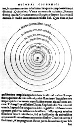

Nicolaus Copernicus, De revolutionibus orbium coelestium libri VI. Norimbergae, apud Joh[annem] Petreium, 1543. -- (1402 D 28)
Nicolaus Copernicus werd in 1473 in de Poolse stad Torun geboren en behalve voor een studieverblijf van 1497 tot 1503 in Italië zou hij zijn vaderland niet meer verlaten. Hij was een buitengewoon veelzijdig man: doctor in het kerkrecht (wat samenhing met zijn kanunnikschap), arts, kenner van het Grieks (toen nog iets bijzonders) en astronoom. Zijn sterrenkundige studiën beoefende hij vooral aan de universiteit van Kraków, een beroemd centrum daarvoor.
Uit zijn studie van Griekse en Romeinse auteurs had Copernicus al sinds 1514, of misschien nog vroeger, begrepen dat er sterk afwijkende meningen over de vorm van het heelal -- wij zouden in dit geval misschien eerder over ‘zonnestelsel’ spreken -- bestonden: niet de aarde zou daarvan het middelpunt vormen, maar de zon. Deze opvatting maakte hij in Kraków aan zijn geestverwanten bekend door middel van een klein geschriftje, de Commentariolus, maar het duurde tot 1543, toen hij zeventig jaar was, voordat hij zijn boek ‘over de omwentelingen der hemellichamen’ publiceerde. Vooral de eerste afdeling ervan was revolutionair: Copernicus legde erin uit dat de dagelijkse opkomst en ondergang van de hemellichamen zoals die zich aan ons voordoet, een gevolg is van het feit dat de aarde in één dag om haar eigen as draait en dat die afwisseling van de seizoenen het gevolg is van de baan die de aarde in één jaar tijd om de zon volbrengt. Ook de andere planeten draaien om de zon, en het ‘heelal’ wordt afgesloten door een onbeweeglijke sterrenhemel. Hiermee gaf Copernicus mede te kennen dat naar zijn mening de zon het middelpunt van dat ‘heelal’ is en dat de aarde beweegt. Merkwaardigerwijs zou de laatste opvatting er de oorzaak van worden dat het boek, zij het pas in 1616, op de index geplaatst werd.
Copernicus was inmiddels in 1543 overleden, nadat hij de laatste maanden van zijn leven verlamd was geweest. Heeft hij zijn levenseinde voorvoeld en is hij daarom pas toen tot de publicatie van zijn, zeker ook in religieuze zin schokkende boek overgegaan?
| vorige pagina | top pagina |